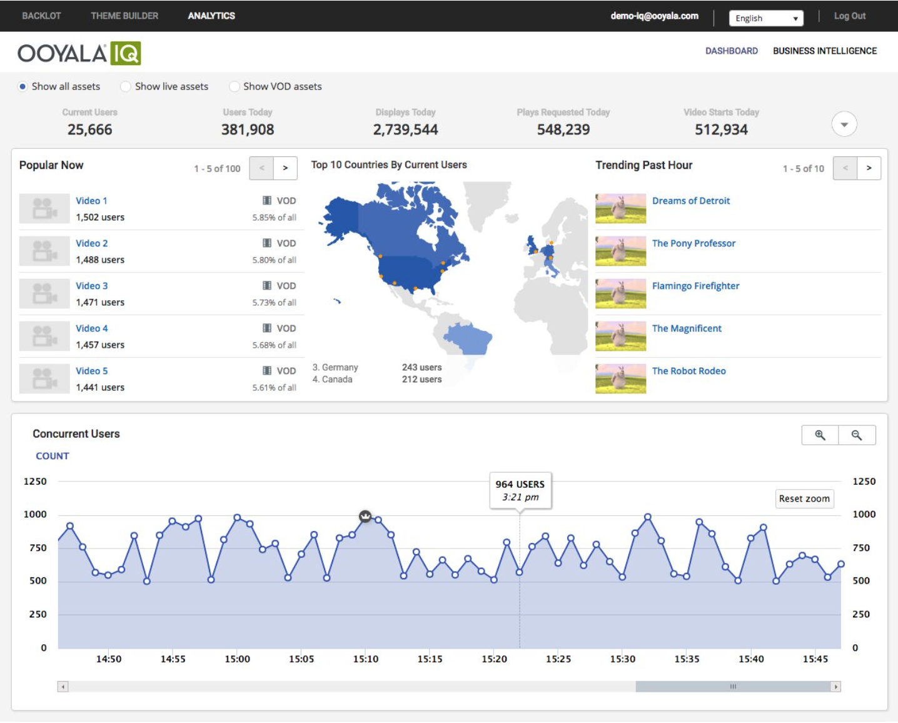
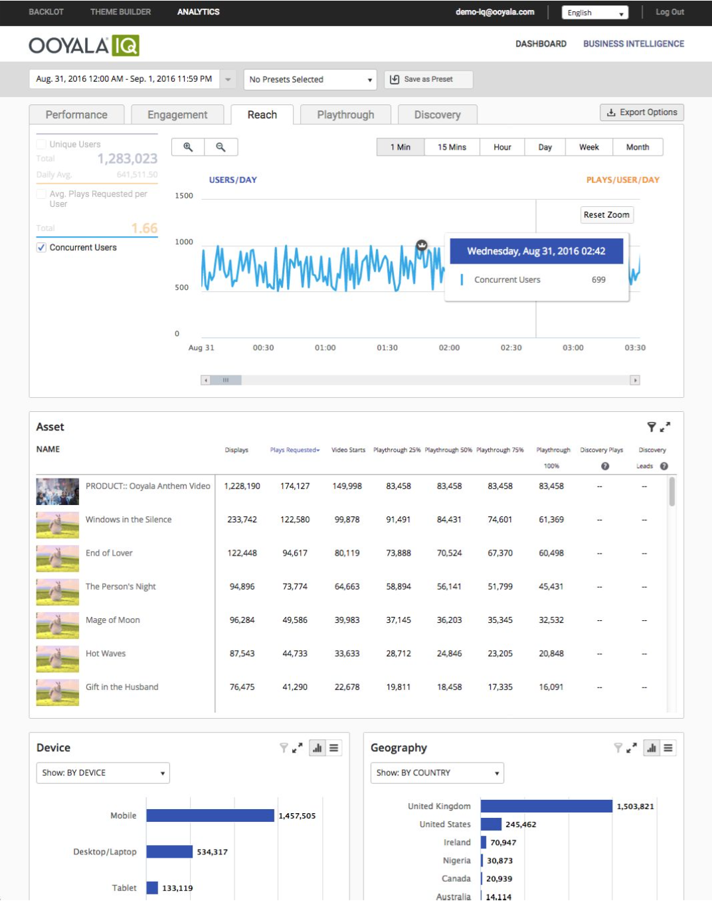

Notable contents of this release include upgrades to the Dashboard and Business Intelligence board for Live and Video-on-Demand content types.
Ooyala IQ Release - Version 1.6.2
The features below apply both to Live content types as well as Video-on-Demand content types.
Dashboard
- The overall Concurrent User Trending chart across your entire account can be seen at one-minute granularity level
when login takes place.
The Concurrent User Trending view presents a snapshot at a given moment. The view is updated at each one-minute interval.
- You can select one asset from the Popular Now window or from the Trending Past Hour window,
and see Concurrent User Trending for each asset.
- This Trending chart is a dynamic, moving chart that spans
from the current moment back to four hours ago. It is updated in real time.
- You can zoom in and out of the chart.
- You can get the peak concurrent user in the chart.

Business Intelligence
- The Business Intelligence Board end-to-end latency has been reduced to 90 minutes.
- You can go to the Reach tab and see concurrent user historical data.
- You can pick any time window, from a minimum of 15 minutes to maximum of 2 days, to see the trending of concurrent users.
For example, if you select 03/30/16 12:00pm to 03/30/16 12:15pm, you will get data points for 12:00pm, 12:14pm.
- You can get one-minute data granularity for concurrent user metrics for your overall account, as well as each asset.
You can filter by multiple video assets, with an upper limit of 50.
- You can get the peak concurrent user in the Concurrent Trending chart.
- You can view the average concurrent user per minute in the lefthand panel.
Note: No other dimensional breakdown for concurrent user (device, geo, etc.) is supported currently. This means that there is no filter capability for these dimensions.
When the user is in one-minute concurrent user view, all filters other than asset are disabled.
Likewise, when a filter other than asset is applied, one-minute granularity is disabled.
Note: Concurrent user metrics can only be shown at the one-minute granularity level.
If you change the granularity to another value, like fifteen minutes, one hour, etc.,
the view will automatically switch to show unique users.

This content was published on 09/30/16 at 11:00 PM UTC.